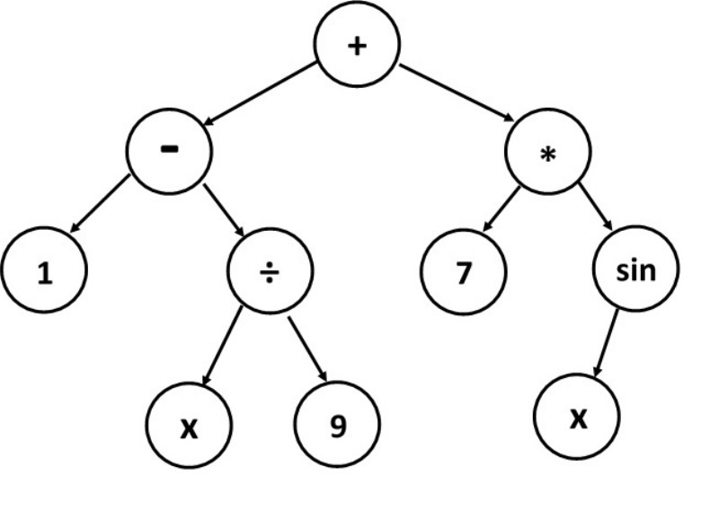

Given a function $f(x)$, we can approximate its derivative $f'(x)$ by the finite difference formula
$$ f'(x) \approx \frac{f(x+h) - f(x)}{h} $$where $h$ is a small number. This is called the forward difference formula.
In the limit $h \to 0$, we expect the approximation to converge to the value of the derivative. The question is how quickly does it converge?
Let's estimate the error due to forward difference. Start from the regular Taylor explansion:
$$ f(x + h) = f(x) + hf'(x) + \frac{1}{2}h^2f''(x) + O(h^3) $$We can rearrange this to get $f'(x)$ on the left hand side:
$$ f'(x) = \frac{f(x+h) - f(x)}{h} - \frac{1}{2}hf''(x) + O(h^2) $$The first term is our forward difference expression, while the rest becomes the truncation error.
The error of forward difference is:
$$ \varepsilon = \frac{1}{2}hf''(x) + O(h^2) $$Since the largest term scales with first order in $h$, we say this is a first order method.
We can achieve second order accuracy by using a slightly different formula:
$$ f'(x) \approx \frac{f(x+h) - f(x-h)}{2h} $$This scheme is called central difference.
Expanding both $f(x+h)$ and $f(x-h)$ in Taylor series, we get:
$$ \begin{align} f(x+h) &= f(x) + hf'(x) + \frac{1}{2}h^2f''(x) + \frac{1}{6}h^3f'''(x) + O(h^4) \\ f(x-h) &= f(x) - hf'(x) + \frac{1}{2}h^2f''(x) - \frac{1}{6}h^3f'''(x) + O(h^4) \\ \end{align} $$We can construct $f'(x)$ from these two equations:
$$ f'(x) = \frac{f(x+h) - f(x-h)}{2h} - \frac{1}{6}h^2f'''(x) + O(h^3) $$The error of central difference is:
$$ \varepsilon = -\frac{1}{6}h^2f'''(x) + O(h^3) $$Since the largest term now scales with $h^2$, we call this scheme second-order accurate.
By using more points, we can construct higher order formulae. For example, the following formula is fourth order accurate:
$$ f'(x) \approx \frac{-f(x+2h) + 8f(x+h) - 8f(x-h) + f(x-2h)}{12h} $$How to find formulae like this?
$$ \begin{align} f(x+2h) &= f(x) + 2hf'(x) + \frac{4}{2}h^2f''(x) + \frac{8}{6}h^3f'''(x) + O(h^4) \\ f(x+h) &= f(x) + hf'(x) + \frac{1}{2}h^2f''(x) + \frac{1}{6}h^3f'''(x) + O(h^4) \\ f(x-h) &= f(x) - hf'(x) + \frac{1}{2}h^2f''(x) - \frac{1}{6}h^3f'''(x) + O(h^4) \\ f(x-2h) &= f(x) - 2hf'(x) + \frac{4}{2}h^2f''(x) - \frac{8}{6}h^3f'''(x) + O(h^4) \\ \end{align} $$Solve for $f'(x)$
The same prescription can be used to find higher derivatives too:
$$ f''(x) \approx \frac{f(x+h) - 2f(x) + f(x-h)}{h^2} $$The error on this estimate can be found to be:
$$ \varepsilon = -\frac{1}{12}h^2f^{(4)}(x) + O(h^4) $$So this formula is second-order accurate, similar to central difference.
Finite difference can be used to calculate partial derivatives too. For example, the partial derivative of $f(x,y)$ with respect to $x$ and $y$ are:
$$ \begin{align} \frac{\partial f}{\partial x} &\approx \frac{f(x+h,y) - f(x-h,y)}{2h} \\ \frac{\partial f}{\partial y} &\approx \frac{f(x,y+h) - f(x,y-h)}{2h} \end{align} $$This will be a cornerstone for our discussion of PDEs in the future.
Symbolic differentiation is the process of finding the derivative of a function using its symbolic representation and rules of differentiation.
A computer algebra system typically represents expressions as a tree of mathematical operations:
This gives the tree representation of the expression $(1 - x / 9) + 7\sin x$.
Once you know the tree representation, you can apply the rules of differentiation to the tree to get the derivative.
The derivative of the tree depicted above is $-1/9 + 7\cos x$.
Significant effort may be needed to simplify the final expression, especially when the original function is very complicated.
Special functions that cannot be written in terms of elementary functions need their own special rules. E.g. $J_\nu(x)$, $H_n(x)$, $\mathrm{Erf}(x)$, etc.
Symbolic differentiation is very useful for analytical work, but it's typically not directly used in numerical calculations.
Automatic differentiation (AD) is a set of techniques to numerically evaluate the derivative of a function specified by a computer program.
It applies the rules of differentiation on the floating point operations level, allowing the program to compute the derivative of a function as a byproduct of function evaluation, with a small overhead.
Let's look at an example. Consider the following function:
$$ f(x_1, x_2) = \left[\sin\left(\frac{x_1}{x_2}\right) + \frac{x_1}{x_2} - e^{x_1}\right]\times \left[\frac{x_2}{x_1} - e^{x_2}\right] $$Let's try to simultaneously calculate $f(1.5, 0.5)$ and $\partial f/\partial x_1(1.5, 0.5)$
| $v_0 = x_1 = 1.5$ | $\dot{v}_0 = 1$ |
| $v_1 = x_2 = 0.5$ | $\dot{v}_1 = 0$ |
| $v_2 = v_0 / v_1 = 3$ | $\dot{v}_2 = (\dot{v}_0 v_1 - v_0 \dot{v}_1) / v_1^2 = 2$ |
| $v_3 = \sin v_2 = 0.141$ | $\dot{v}_3 = \dot{v}_2 \cos v_2 = -1.980$ |
| $v_4 = \exp(v_0) = 4.482$ | $\dot{v}_4 = \dot{v}_0 \exp(v_0) = 4.482$ |
| $v_5 = v_1 / v_0 = 0.333$ | $\dot{v}_5 = (\dot{v}_1 v_0 - v_1 \dot{v}_0) / v_0^2 = -0.222$ |
| $v_6 = \exp(v_1) = 1.649$ | $\dot{v}_6 = \dot{v}_1 \exp(v_1) = 0$ |
| $v_7 = v_3 + v_2 - v_4 = -1.341$ | $\dot{v}_7 = \dot{v}_3 + \dot{v}_2 - \dot{v}_4 = -4.480$ |
| $v_8 = v_5 - v_6 = -1.316$ | $\dot{v}_8 = \dot{v}_5 - \dot{v}_6 = -0.222$ |
| $f(x_1, x_2) = v_7 \times v_8 = 1.765$ | $\partial f/\partial x_1 = \dot{v}_7 \times v_8 + v_7 \times \dot{v}_8 = 6.193$ |
Note that the derivative calculated using AD is accurate to machine precision. It is significantly more accurate than typical finite difference results.
AD is also significantly faster than symbolic differentiation, as it only adds a constant amount of overhead to every floating point operation.
This technique is now widely used to compute derivatives of a deep neural network. It facilitates gradient descent, which is used to train neural networks towards a local extremum.